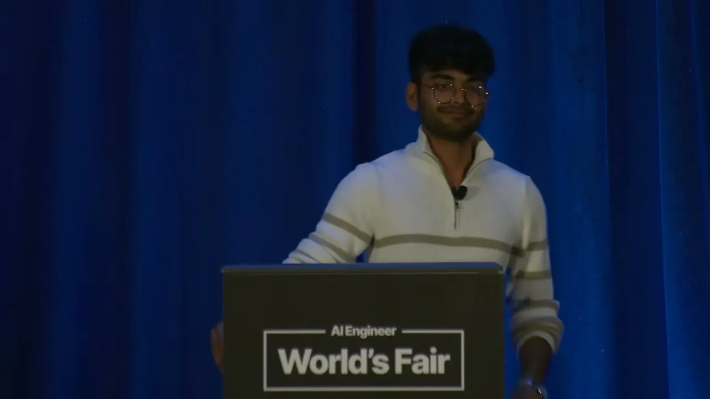

The speaker argues that AI finance demos are easy to build and impressive to show, but fail once promoted to pilots because the agent has never seen the customer's actual future data, producing high rates of production bugs.
“once these demos are promoted to pilots and you start onboarding new customers, the agent has never seen these future data”
▶ watch at 01:33
Since better models and faster chips arrive on a multi-month lag outside a team's control, the talk argues the controllable variable for fixing production bugs in real time is the developer's own iteration loop, which needs to be automated and sped up continuously.
“The answer is your dev loop velocity. The model capability increases very exponentially.”
▶ watch at 02:37The recommended pattern is isolated git worktrees per sub-agent so parallel tasks don't collide, with a concrete example of 50 active work trees running on a MacBook with 48GB of RAM. Across a nine-step bug-fix pipeline (from parsing a QA ticket to shipping to a stage environment), the speaker argues a human is only needed at step 1 and step 9 — task intake and final validation.
“get work trees are your best friend. So, think of work trees as isolated folders.”
▶ watch at 03:07“with 48 GB of RAM on your MacBook, you can have 50 active work trees. That is 50 active sub-agents working independently on”
▶ watch at 04:42“the human is only required at steps 1 and 9 because the in-between steps, the agent can do a lot better work”
▶ watch at 06:16Because Auditoria's agents operate in finance, where a human auditor and SOC-compliance controller normally sign off on changes, the talk raises accountability as unresolved when agents review agents' work: if something breaks in production, there's no clear party to hold responsible.
“If something goes wrong in production, you can't say Cloud is doing this. Something is wrong.”
▶ watch at 08:52The talk's second half describes iterating the dev harness itself: having the agent analyze its own process bottlenecks after each batch of bug fixes and remove them over roughly a month, until a single sentence can trigger the whole pipeline. The recommended end state keeps a human as verifier of agent output, not as the ceiling on how much work can get done.
“you just tell the agent to analyze all the bottlenecks in this process. Make a list of them. And somehow slowly keep removing these bottlenecks every day.”
▶ watch at 09:54“Always have the human as a verifier, but not the throughput ceiling because human attention is very limited.”
▶ watch at 13:00(ours) The accountability claim (c6) is the sharpest point in the talk and the least resolved — the speaker raises the agent-reviewing-agent gap as a real problem in a SOC-compliance context but doesn't describe how Auditoria itself closes it, beyond keeping a human at intake and final validation.
| Stance | Claim | t |
|---|---|---|
| warns | AI finance demos fail once promoted to pilots because the agent has never seen the customer's actual future data. | 01:33 |
| asserts | The controllable lever for fixing production bugs in real time is the developer's own iteration loop, since model and chip upgrades arrive on a multi-month lag. | 02:37 |
| recommends | Isolated git worktrees let parallel sub-agents work on independent tasks without interfering with each other. | 03:07 |
| asserts | The speaker cites running 50 active work trees, each an independent sub-agent, on a MacBook with 48GB of RAM. | 04:42 |
| recommends | Across a nine-step bug-fix pipeline, a human is only required at step 1 (task intake) and step 9 (final validation). | 06:16 |
| warns | When agents review other agents' work in a regulated finance context, there is no clear party to hold accountable if production breaks. | 08:52 |
| recommends | The dev harness itself can be improved by having the agent analyze and remove its own process bottlenecks after each batch of bug fixes. | 09:54 |
| recommends | The human should remain a verifier of agent output rather than the ceiling on how much work can get done. | 13:00 |
Machine-readable copy embedded in this page (script#ontology) and in the corpus ontology.